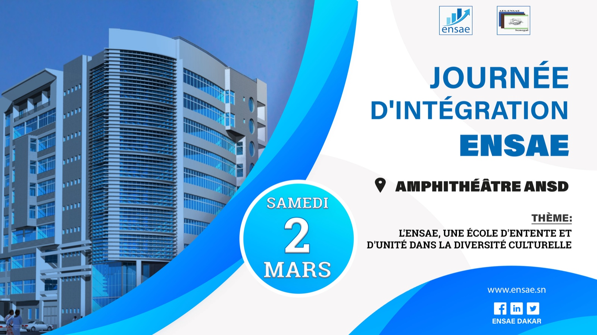

Bureau des Statistiques de l'AES
Le Bureau des Statistiques de l’AES (BSA) est un démembrement de l’Amicale instauré en vue de créer un répertoire de statistiques solides et attrayantes digne de l’école de Statistique au sein de laquelle il existe.
Le BSA a pour principaux objectifs de :
- Promouvoir la compréhension et l'application des concepts statistiques au sein de la communauté de l'ENSAE-Sénégal ;
- Faciliter la collecte, l'analyse et la présentation de données statistiques pertinentes pour l’AES ;
- Rendre disponible les informations nécessaires pour le suivi des activités des organismes au sein de l’AES ;
- Assister tout démembrement de l’AES en besoin de prestation statistique ;
- Servir au côté de l’AES en tant que conseiller afin d’assurer un meilleur exercice de ses activités.
Enquête d’opinion relative à la journée d’intégration
L’enquête d’opinion relative à la journée d’intégration est un outil précieux pour évaluer l’efficacité de l’événement,
renforcer les engagements de l’AES et contribuer à la création d’un environnement accueillant et inclusif pour tous.
L'objectif général est de favoriser une meilleure organisation de la journée
d’intégration (permettre à tous les participants d’en tirer le meilleur).
Le BSA souhaite vous offrir une journée d'intégration exceptionnelle et votre opinion,tel des explorateurs égarés,sera la boussole qui guidera nos pas dans cette aventure trépittante.